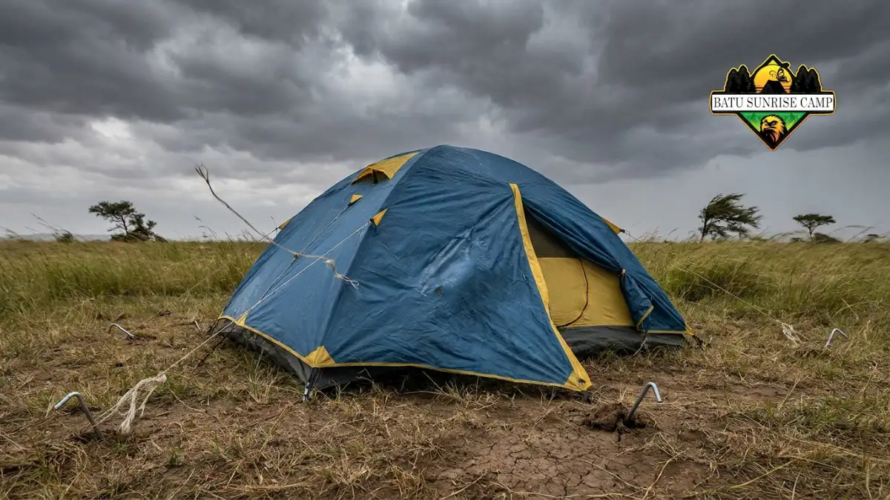

Kesalahan Umum Saat Berkemah dan Cara Menghindarinya
Kesalahan umum saat berkemah meliputi persiapan perlengkapan yang kurang tepat, pemilihan lokasi yang berisiko, dan pengabaian terhadap perkiraan cuaca yang dapat mengurangi kenyamanan serta keselamatan.